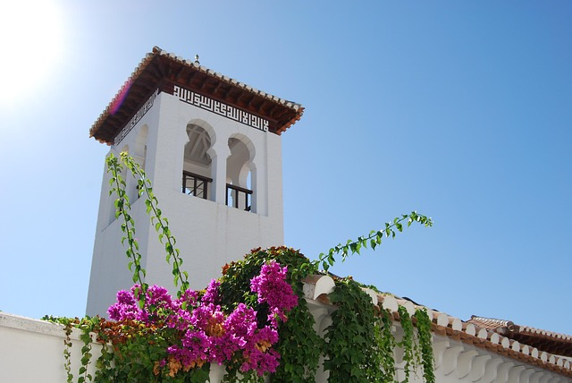
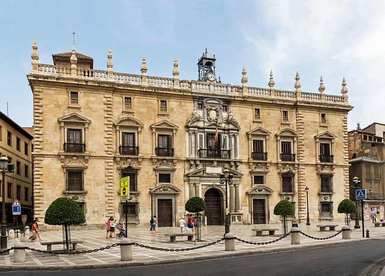
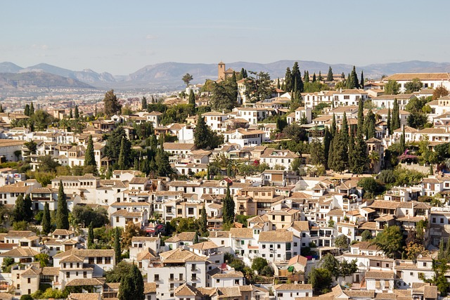
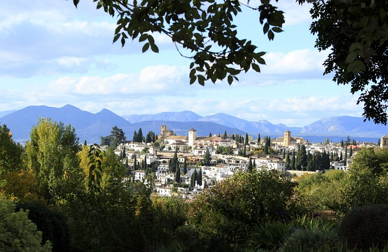
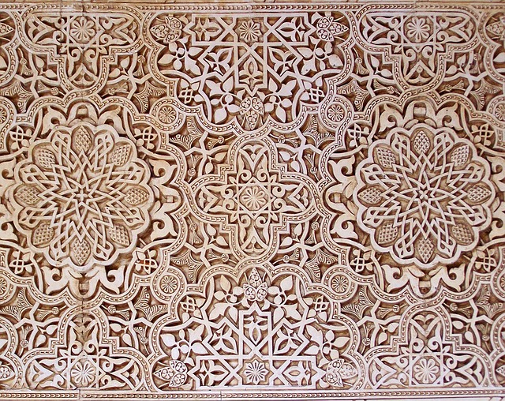
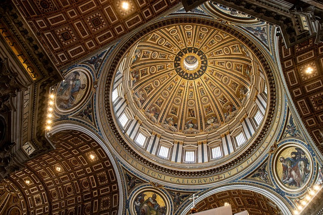
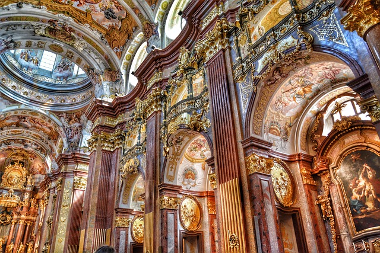

GUIA CULTURAL GRANADA
Ruta inolvidable de los diferentes districto y barrios de Granada.Granada es una joya cultural que combina la herencia andalusí, el arte renacentista y una vibrante identidad mestiza.
DISTRITOS
ZAIDIN

El Zaidín es el distrito más poblado de Granada, situado en la zona sur de la ciudad. Es un barrio de origen obrero con una fortísima identidad cultural, famoso por acoger el Zaidín Rock, el festival de rock gratuito más antiguo de Europa.En su fisonomía destaca la convivencia de zonas residenciales tradicionales (como la barriada de Santa Adela) con grandes infraestructuras modernas de la ciudad, entre las que se encuentran el Estadio Nuevo Los Cármenes y el Palacio de Deportes.¿Qué aspecto te gustaría profundizar del Zaidín?Saber más sobre el festival Zaidín RockConocer su historia y origenVer lugares de interés del barrio
CENTRO

El Centro de Granada es el corazón histórico, comercial y administrativo de la ciudad, delimitado por ejes principales como la Gran Vía de Colón, la Calle Reyes Católicos y la Calle Recogidas. A diferencia de barrios más residenciales como el Zaidín, el Centro destaca por su intensa actividad urbana, su monumental arquitectura señorial y su vibrante ambiente de tapeo.
ALBAICIN

El Albaicín (o Albayzín) es el barrio más antiguo, pintoresco e histórico de Granada, declarado Patrimonio de la Humanidad por la UNESCO en 1994. Situado en la colina frente a la Alhambra, este antiguo barrio morisco conserva intacto su trazado medieval de calles estrechas, empedradas y laberínticas.
REALEJO

El Realejo es el antiguo barrio judío de Granada (conocido en la época musulmana como Garnata al-Yahud), situado justo a los pies de la Alhambra. Es un distrito con un fuerte carácter bohemio y residencial que combina una rica historia medieval con un ambiente moderno y alternativo.
RUTAS CULTURALES
LA GRANADA NAZARI

El reino nazarí de Granada fue el último bastión de Al Andalus en la península ibérica durante la Edad Media (1238-1492). El primer sultán de la dinastía nazarí, Muhammad I al-Ahmar, fue el fundador de la Alhambra en 1238, en la cima de la colina de La Sabika, quedando relegados a un segundo plano los magníficos palacios ziríes junto a la Alcazaba Cadima, hoy desaparecidos. Alhambra y Albaicín permanecen en un diálogo eterno, una frente a otra, recordando tiempos de esplendor y riquezas, donde el poder de la palabra, de la música, del arte y de la ciencia eran los pilares de la carismática cultura andalusí en el Reino Nazarí de Granada.
LA GRANADA RENACENTISTA

El Renacimiento granadino es único en Europa. Tras la Toma de Granada en 1492, se inicia una etapa de transformación socio-política y religiosa: la ciudad musulmana se transforma en cristiana. El gótico tardío isabelino, el estilo renacentista y el arte mudéjar conviven para convertir mezquitas en iglesias y en Catedral; casas nazaríes en casas-palacio de la alta sociedad cristiana; estrechas calles y placetas moriscas en amplias plazas al estilo castellano; y los espacios extramuros se urbanizan alternando la arquitectura civil con la religiosa.
LA GRANADA BARROCA

El Renacimiento granadino es único en Europa. Tras la Toma de Granada en 1492, se inicia una etapa de transformación socio-política y religiosa: la ciudad musulmana se transforma en cristiana. El gótico tardío isabelino, el estilo renacentista y el arte mudéjar conviven para convertir mezquitas en iglesias y en Catedral; casas nazaríes en casas-palacio de la alta sociedad cristiana; estrechas calles y placetas moriscas en amplias plazas al estilo castellano; y los espacios extramuros se urbanizan alternando la arquitectura civil con la religiosa.